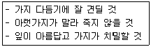
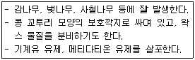
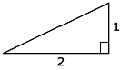
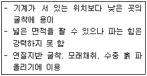
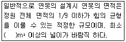

조경기능사 (2009-09-27 기출문제)
1과목: 조경일반
1. 다음 중 여러 단을 만들어 그 곳에 물을 흘러내리게 하는 이탈리아 정원에서 많이 사용되었던 조경기법은?
- 캐스케이드
- 토피어리
- 록 가든
- 캐널
(정답률: 88%)

2. 일반적으로 높이 10m의 방풍림에 있어서 방풍 효과가 미치는 범위를 바람 위쪽과 바람 아래쪽으로 구분할 수 있는데, 바람 아래쪽은 약 얼마까지 방풍효과를 얻을 수 있는가?
- 100m
- 300m
- 500m
- 1000m
(정답률: 71%)
3. 다음 중 중국에서 가장 오래전에 큰 규모의 정원으로 만들어졌으나 소실되어 남아 있지 않은 것은?
- 중앙공원
- 북해공원
- 아방궁
- 만수산이궁
(정답률: 80%)
4. 영구위조(永久萎凋)시의 토양의 수분 함량은 사토(砂土)의 경우 몇 % 인가?
- 2 ~ 4%
- 10 ~ 15%
- 20 ~ 25%
- 30 ~ 40%
(정답률: 60%)
5. 우리나라에서 조경이라는 용어가 사용되기 시작한 때는?
- 1960년대 초반
- 1970년대 초반
- 1980년대 초반
- 1990년대 초반
(정답률: 87%)
6. 조경제도에서 단면도를 그리기 위해 평면도에 절단 위치를 표시하고자 한다. 사용할 선의 종류는? (단, KS F 1501을 기준으로 한다.)
- 실선
- 파선
- 2점쇄선
- 1점쇄선
(정답률: 74%)
7. 18세기 랩턴에 의해 완성된 영국의 정원 수법으로 가장 적합한 것은?
- 노단건축식
- 평면기하학식
- 사의주의 자연풍경식
- 사실주의 자연풍경식
(정답률: 83%)
8. 다음 중 오픈스페이스의 효용성과 가장 관련이 먼 것은?
- 도시 개발형태의 조절
- 도시 내 자연을 도입
- 도시 내 레크레이션을 위한 장소를 제공
- 도시 기능 간 완충효과의 감소
(정답률: 74%)
9. 먼셀의 색상환에서 BG는 무슨 색인가?
- 연두
- 남색
- 청록
- 보라
(정답률: 90%)
10. 독도는 광활한 바다에 우뚝 솟은 바위섬이다. 독도의 전망대에서 바라보는 경관의 유형으로 가장 적합한 것은?
- 파노라마경관
- 지형경관
- 위요경관
- 초점경관
(정답률: 85%)
11. 축소 지향적인 일본의 민족성과 극도의 상징성으로 조성된 정원양식은?
- 중점식
- 고산수식정원
- 전원풍경식정원
- 평면기하학식
(정답률: 92%)
12. 정원과 밀접한 관계를 가진 자연환경 요소가 아닌 것은?
- 토양
- 광선
- 바람이 없고 맑게 개인 밤의 새벽에는 서리가 적어 피해가 드물다.
- 인동간격
(정답률: 70%)
13. 조경설계에서 보행인의 흐름을 고려하여 최단거리의 직선 동선(動線)으로 설계하지 않아도 되는 곳은?
- 대학 캠퍼스 내
- 축구경기장 입구
- 주차장, 버스정류장 부근
- 공원이나 식물원 내
(정답률: 84%)
14. 다음 정원요소 중 인도정원에 가장 큰 영향을 미친 것은?
- 노단건축식
- 토피아리
- 돌수반
- 물
(정답률: 86%)
15. 정연한 가로수, 뜀 돌의 배열, 벽천이나 분수에서 끊임없이 물을 내뿜는 것 등은 어떤 미를 응용한 예인가?
- 점층미
- 반복미
- 대비미
- 조화미
(정답률: 82%)
2과목: 조경재료
16. 형상은 절두각추체에 가깝고, 전면은 거의 평면을 이루며 대략 정사각형으로서 뒷길이 접축면의 폭, 뒷면 등이 규격화 된 돌로서 4방락 또는 2방락의 것이 있다. 접촉면의 폭은 전면 1번의 길이의 1/10 이상이어야 하고, 접촉면의 길이는 1변의 평균 길이의 1/2 이상인 돌은?
- 호박돌
- 다듬돌
- 견치돌
- 각석
(정답률: 88%)
17. 일반적으로 제재된 목재의 기건상태는 함수율이 몇 %일때 인가?
- 5%
- 15%
- 30%
- 50%
(정답률: 87%)
18. 정원수 이용 분류상 보기의 설명에 해당되는 것은?

- 가로수
- 녹음수
- 방풍수
- 생울타리
(정답률: 88%)
19. 덩굴로 자라면서 여름에 아름다운 꽃이 피는 수종은?
- 등나무
- 홍가시나무
- 능소화
- 남천
(정답률: 80%)
20. 다음 중 건조한 땅에 잘 견디는 수종은?
- 가중나무
- 낙우송
- 능수버들
- 위성류
(정답률: 72%)
21. 다음 중 개화기간이 길며, 줄기의 수피 껍질이 매끈하고, 적갈색 바탕에 백반이 있어 시각적으로 아름다우며 한 여름에 꽃이 드문 때 개화하는 부처꽃과(科)의 수종은?
- 배롱나무
- 벚나무
- 산딸나무
- 회화나무
(정답률: 82%)
22. 콘크리트의 골재, 석출의 에움(채움)돌 등으로 주로 사용되는 것은?
- 잡석
- 호박돌
- 자갈
- 견치석
(정답률: 70%)
23. 조경 수목의 구비조건으로 적합하지 않은 것은?
- 불리한 환경에서도 견딜 수 있는 힘이 커야한다.
- 병 · 해충에 대한 저항성이 강해야 한다.
- 다듬기 작업 등 관리가 용이해야 한다.
- 번식이 어렵고, 소량으로 구입할 수 있어야 한다.
(정답률: 95%)
24. 수확한 목재를 주로 가해하는 대표적 해충은?
- 흰개미
- 매미
- 풍뎅이
- 흰불나방
(정답률: 91%)
25. 뚜렷하고 곧은 원줄기가 있고, 줄기와 가지의 구별이 명확하며 줄기의 길이가 현저히 큰 나무를 가리키는 것은?
- 덩굴식물
- 교목
- 관목
- 지피식물
(정답률: 89%)
26. 토양의 비옥도에 따라 수종이 영향을 받는데, 척박지에 잘 견디는 수종으로 가장 적합한 것은?
- 삼나무
- 자귀나무
- 배롱나무
- 이팝나무
(정답률: 71%)
27. 마그마가 지하 10km 정도의 깊이에서 서서히 굳어진 화강암의 주요 구성 광물이 아닌 것은?
- 석회
- 석영
- 장석
- 운모
(정답률: 74%)
28. 콘크리트공사에서 워커빌리티의 측정법으로 부적합한 것은?
- 표준관입시험
- 구관입시험
- 다짐계수시험
- 비비(Vee-Bee)시험
(정답률: 41%)
29. 조경재료 중 점토 제품이 아닌 것은?
- 소형고압블럭
- 타일
- 적벽돌
- 오지토관
(정답률: 73%)
30. 볏짚의 쓰임 용도로 가장 부적합한 것은?
- 줄기를 싸 주거나 지표면을 덮어준다.
- 줄기를 감싸 해충의 잠복소를 만들어 준다.
- 내한력이 약한 나무를 보호하기 위해 사용된다.
- 이식작업이나 운반 등 무거운 물체를 목도할 때 사용된다.
(정답률: 88%)
31. 다음 미장재료 중 가장 자연적인 분위기를 살릴 수 있고, 우리나라 고유의 전통성을 강조시키기에 가장 좋은 것은?
- 시멘트 모르타르
- 테라조
- 벽토
- 페인트
(정답률: 92%)
32. 여름에는 연보라 꽃과 초록의 잎을, 가을에는 검은 열매를 감상하기 위한 백합과 지피식물은?
- 맥문동
- 만병초
- 영산홍
- 칡
(정답률: 89%)
33. 일반적인 합판의 특징이 아닌 것은?
- 함수율 변화에 의한 수축 · 팽창의 변형이 적다.
- 균일한 크기로 제작 가능하다.
- 균일한 강도를 얻을 수 있다.
- 내화성을 크게 높일 수 있다.
(정답률: 85%)
34. 벤치, 인공폭포, 인공암, 수목 보호판 등으로 이용하기 가장 적합한 것은?
- 경질염하비닐판
- 유리섬유강화플라스틱
- 폴리스티렌수지
- 염화비닐수지
(정답률: 89%)
35. 흰색 계열의 꽃이 피는 수종은?
- 배롱나무
- 산수유
- 일본목련
- 백합나무
(정답률: 63%)
3과목: 조경 시공 및 관리
36. 뿌리분의 직경을 정할 때 그 계산식이 바른 것은? (단, A : 뿌리분의 직경, N : 근원직경, d : 상록수와 낙엽수의 상수0
- A = 24 + (N - 3) × d
- A = 22 + (N + 3) × d
- A = 26 + (N - 3) × d
- A = 20 + (N + 3) × d
(정답률: 89%)
37. 잔디의 잡초 방제를 위한 방법으로 부적합한 것은?
- 파종 전 갈아엎기
- 잔디깎기
- 손으로 뽑기
- 비선택성 제초제의 사용
(정답률: 80%)
38. 배수불량 및 과다한 밟기가 원인으로 잎에 황색의 반점과 황색 가루가 발생하는 잔디에 가장 많이 발생하는 병은?
- 녹병
- 탄저병
- 근부병
- 잎마름병
(정답률: 88%)
39. 일반적으로 원로에 설치되는 계단의 답면(踏面)의 나비를 b, 축상(築上)의 높이를 h라고 할 때 2h + b 가 갖는 적당한 수치 범위는?
- 30 ~ 40cm
- 60 ~ 65cm
- 90 ~ 100cm
- 115 ~ 125cm
(정답률: 80%)
40. 배나무 붉은별무늬병의 겨울포자 세대의 중간기주 식물은?
- 잣나무
- 향나무
- 배나무
- 느티나무
(정답률: 83%)
41. 수목을 굴취한 이후 옮겨심기 순서에 가장 적합한 것은? (단, 진행 과정 중 일부 작업은 생략될 수 있음)
- 구덩이 파기→수목넣기→2/3정도 흙 채우기→물 부어 막대기 다지기→나머지 흙 채우기
- 구덩이 파기→2/3정도 흙 채우기→수목넣기→물 부어 막대기 다지기→나머지 흙 채우기
- 구덩이 파기→물 붓기→수목넣기→나머지 흙 채우기
- 구덩이 파기→수목넣기→물 붓기→2/3정도 흙 채우기→다지기→나머지 흙 채우기
(정답률: 83%)
42. 조경의 구조물에는 직접기초를 사용되는데, 담장의 기초와 같이 길게 띠 모양으로 받치고 있는 기초를 가리키는 것은?
- 독립기초
- 복합기초
- 연속기초
- 전면기초
(정답률: 86%)
43. 다음 중 수관 폭을 형성하는 가지 끝 아래의 수관선을 기준으로 환상으로 깊이 20 ~ 25cm, 나비 20 ~ 30cm 정도로 둥글게 파서 거름을 주는 방법은?
- 윤상거름주기
- 방사상거름주기
- 천공거름주기
- 전면거름주기
(정답률: 83%)
44. 다음 중 산울타리의 다듬기 방법으로 옳은 것은?
- 전정횟수와 시기는 생장이 완만한 수종의 경우 1년에 5 ~ 6회 실시한다.
- 생장이 빠르고 맹아력이 강한 수종은 1년에 8 ~ 10회 실시한다.
- 일반 수종은 장마때와 가을 2회 정도 전정한다.
- 화목류는 꽃이 피기 바로 전 실시하고, 덩굴식물의 경우 여름에 전정한다.
(정답률: 59%)
45. 다음 중 유자격자는 모두 입찰에 참여할 수 있으며, 균등한 기회를 제공하고, 공사비 등을 절감할 수 있으나 부적격자에게 낙찰된 우려가 있는 입찰방식은?
- 특명입찰
- 일반경쟁입찰
- 지명경쟁입찰
- 수의계약
(정답률: 88%)
46. 다음 중 정원수 전정시 맹아력이 가장 강한 것은?
- 쥐똥나무
- 비자나무
- 칠엽수
- 백송
(정답률: 78%)
47. 다음 보기와 같은 특징을 지닌 해충은?

- 바구미
- 진딧물
- 깍지벌레
- 응애
(정답률: 70%)
48. 이 비료성분은 탄소동화잔용, 질소동화작용, 호흡작용 등 생리기능에 중요하며, 뿌리, 가지, 잎 등의 생장점에 많이 분포되어 있다. 결핍시 신장생장이 불량하여, 줄기나 가지가 가늘고 작아지며, 목은 잎부터 황변하여 떨어지게 하는 것은?
- Fe
- P
- Ca
- N
(정답률: 75%)
49. 체계적인 품질관리를 추진하기 위한 데밍(Deming's Cycle)의 관리로 가장 적합한 것은?
- 계획(Plan) - 추진(Do) - 조치(Action) - 검토(Check)
- 계획(Plan) - 검토(Check) - 추진(Do) - 조치(Action)
- 계획(Plan) - 조치(Action) - 검토(Check) - 추진(Do)
- 계획(Plan) - 추진(Do) - 검토(Check) - 조치(Action)
(정답률: 56%)
50. 토피어리(Topiary)의 용어 설명으로 가장 적합한 것은?
- 정지, 전정이 잘 된 나무를 뜻한다.
- 어떤 물체의 형태로 다듬어진 나무를 뜻한다.
- 정지, 전정을 잘하면 모양이 좋아질 나무를 뜻한다.
- 노쇠지, 고사지 등을 완전 제거한 나무를 뜻한다.
(정답률: 88%)
51. 조경시공의 일정계획을 수립할 때 사용되는 1일 평균 시공량 산정식으로 옳은 것은?
- 공사량/작업가능일수
- 공사량/계약기간
- 공사량/(소요작업일수×1/3)
- 공사량/(작업가능일수×1/4)
(정답률: 76%)
52. 식재 설계도면상에서 특정 수목의 규격 표시를 H3.0 x R10 으로 표기하고 있을 때 그 중 'R' 이 의미하는 것은?
- 흉고직경
- 근원직경
- 반지름
- 수관폭
(정답률: 79%)
53. 옥외조경공사 지역의 배수관 설치에 관한 설명으로 잘못된 것은?
- 경사는 관의 지름이 작은 것일수록 급하게 한다.
- 배수관의 깊이는 동결심도 바로 위쪽에 설치한다.
- 관에 소켓이 있을 때는 소켓이 관의 상류쪽으로 향하도록 한다.
- 관의 이음부는 관 종류에 따른 적합한 방법으로 시공하며, 이음부의 관 내부는 매끄럽게 마감한다.
(정답률: 65%)
54. 다음 그림의 비탈면 기울기를 올바르게 나타낸 것은?

- 경사는 1할 이다.
- 경사는 20% 이다.
- 경사는 50˚이다.
- 경사는 1:2 이다.
(정답률: 71%)
55. 다음과 같이 설명하는 토공사 장비는 종류는?

- 백호
- 파워셔블
- 불도저
- 드래그라인
(정답률: 59%)
56. 다음 중 어린이놀이터 시설 설치시 가장 먼저 고려되어야 할 것은?
- 안전성
- 쾌적함
- 미적인 사항
- 시설물간의 조화
(정답률: 92%)
57. 자연식 연못설계와 관련된 설명 중 ( )에 적합한 수치는?

- 1.5
- 5
- 10
- 15
(정답률: 56%)
58. 자연석 쌓기 할 면적이 100m2, 자연석의 평균 뒷길이가 20cm, 단위중량이 2.5t/m3, 자연석을 쌓을 때의 공극률이 30%라고 할 때 조경공의 노무비는? (단, 정원석 쌓기에 필요한 조경공은 1t 당 2.5명, 조경공의 노임단가는 43,800원이다.)
- 3,550,000원
- 2,190,000원
- 2,380,000원
- 3,832,500원
(정답률: 50%)
59. 다음 중 정원수 식재작업의 순서상 가장 먼저 식재를 진행해야 할 수종은?
- 회양목
- 큰 소나무
- 철쭉류 및 잔디
- 명자나무
(정답률: 90%)
60. 네트워크 공정표의 특성에 관한 설명으로 틀린 것은?
- 개개의 작업이 도시되어 있어 프로젝트 전체 및 부분파악이 용이하다.
- 작업순서 관계가 명확하여 공사 담당자 간의 정보교환이 원활하다.
- 네트워크 기법의 표시상의 제약으로 작업의 세분화 정도에는 한계가 있다.
- 공정표가 단순하여 경험이 적은 사람도 이용하기 쉽다.
(정답률: 70%)